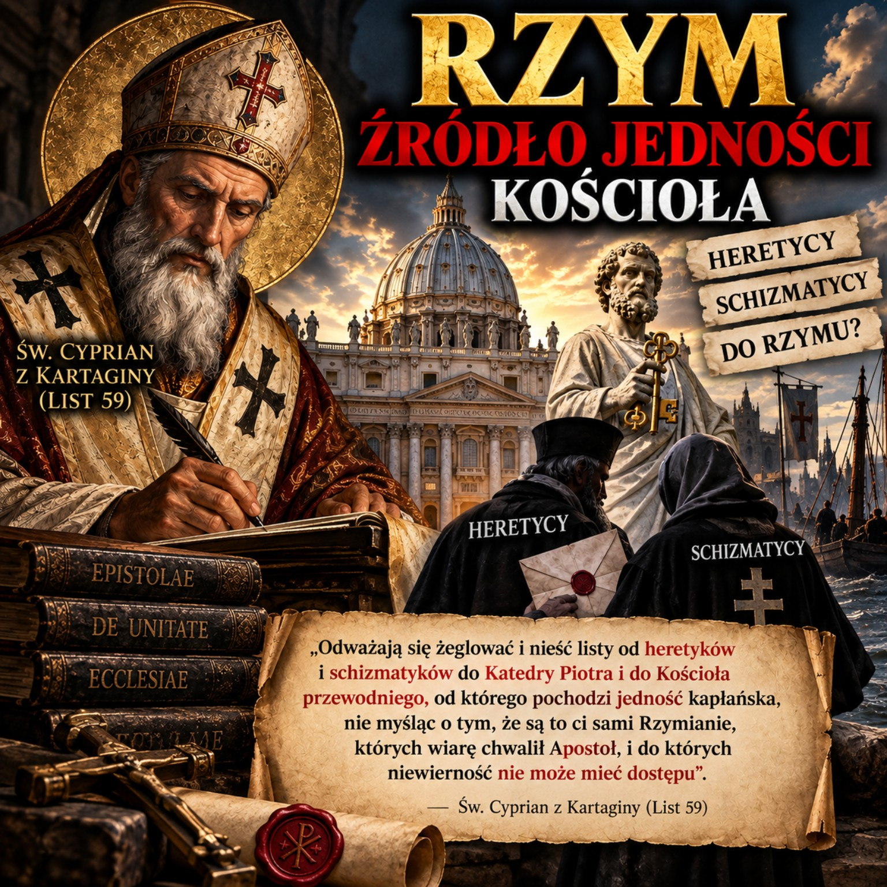

Ojcowie Kościoła · Najnowsze · Święci dnia

Św. Cyprian z Kartaginy — Rzym, Katedra Piotra i jedność Kościoła
Świadectwo Listów św. Cypriana o Katedrze Piotra, Kościele rzymskim, jedności kapłańskiej oraz jego sporze ze Stefanem I w sprawie chrztu heretyków.
Opracowanie przedstawiające materiał źródłowy dotyczący stosunku św. Cypriana do Rzymu i jedności Kościoła.
1. List 59 — Katedra Piotra i Kościół przewodni
W Liście 59 św. Cyprian z Kartaginy pisze o tych, którzy udają się do Rzymu i zanosić tam mają listy od heretyków i schizmatyków. W przytoczonym fragmencie wskazuje na Katedrę Piotra oraz na Kościół określony jako przewodni (główny), od którego pochodzi jedność kapłańska.
Św. Cyprian z Kartaginy, List 59
2. List 48 — „korzeń i łono Kościoła katolickiego”
W Liście 48, skierowanym do biskupa Korneliusza, Cyprian zapewnia go o swoim poparciu w obliczu schizmy Nowacjana. W tym kontekście przywoływane jest określenie rzymskiej wspólnoty jako „korzenia i łona Kościoła katolickiego”.
Św. Cyprian z Kartaginy, List 48
3. List 68 — prośba do Stefana I o interwencję
W Liście 68 Cyprian zwraca się do biskupa Rzymu Stefana I w sprawie Marcjana, biskupa Arles, który przyłączył się do schizmy Nowacjana i odmawiał pojednania z pokutującymi grzesznikami. Materiał przedstawia tę prośbę jako świadectwo praktycznego odwoływania się do biskupa Rzymu w sprawie dotyczącej innej prowincji kościelnej.
4. Spór ze Stefanem I o chrzest heretyków
Relacja Cypriana z Rzymem nie była jednak jednostronna. W sporze dotyczącym ponownego chrztu heretyków Cyprian sprzeciwił się stanowisku Stefana I. W przedstawionej interpretacji konflikt pokazuje napięcie pomiędzy uznaniem szczególnej roli Rzymu a przekonaniem Cypriana o równej godności biskupów.
Cyprian sprzeciwiał się temu, aby jeden biskup nazywał siebie „biskupem biskupów” i narzucał pozostałym swoje rozstrzygnięcie. Nie oznacza to jednak zerwania przez niego jedności Kościoła.
5. Późniejsze świadectwo św. Augustyna
Późniejsza tradycja północnoafrykańska podjęła problem chrztu udzielonego poza pełną jednością Kościoła. Św. Augustyn rozwinął naukę o skuteczności sakramentu niezależnej od osobistej świętości szafarza, a jednocześnie zachował szacunek dla Cypriana i jego świadectwa wierności jedności Kościoła.
6. Wniosek
Świadectwa św. Cypriana tworzą złożony obraz jego stosunku do Rzymu. Z jednej strony przywołuje Katedrę Piotra, Kościół przewodni i jedność kapłańską, określa Kościół rzymski językiem „korzenia i łona” oraz zwraca się do biskupa Rzymu w sprawie kryzysu w Arles. Z drugiej strony jego spór ze Stefanem I pokazuje, że jego eklezjologia nie może być bez zastrzeżeń utożsamiana z późniejszymi, bardziej rozwiniętymi formułami jurysdykcji papieskiej.